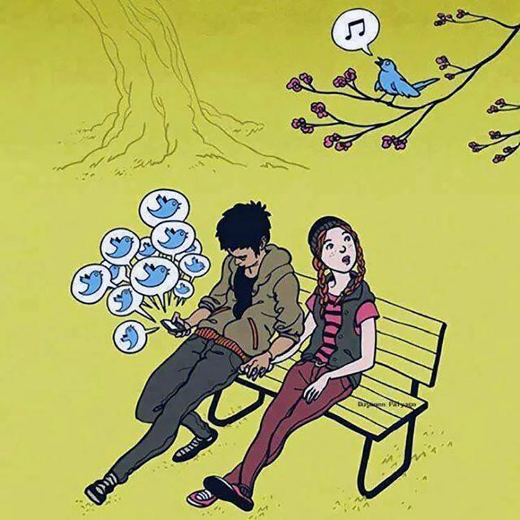

Nuestro objetivo es concientizar a los usuarios sobre la importancia de tener un uso responsable de las redes sociales. Para no generar diversas problemáticas que nos terminan perjudicando nuestra vida y en muchos casos también nuestra salud física y mental.
Creemos que si llegamos con esta iniciativa a varios de ustedes podríamos crear un cambio importante que les permita disfrutar de una manera positiva las grandes ventajas y los increíbles usos que podrían darles a las redes con el fin de que les permita crecer, compartir y trabajar de diferentes maneras en vez de quitarles tiempo y salud.
Por último, una manera muy eficiente de fomentar esta conciencia a más usuarios y transcender fronteras es compartir esta información y dar a conocer estos consejos para alcanzar a más personas. No tan solo pueden comunicarlo en sus redes sociales, pueden hablar con sus familias y/o amigos, en sus escuelas o trabajos. Porque una comunicación más personal puede hacer una diferencia y tomaría el asunto más serio
